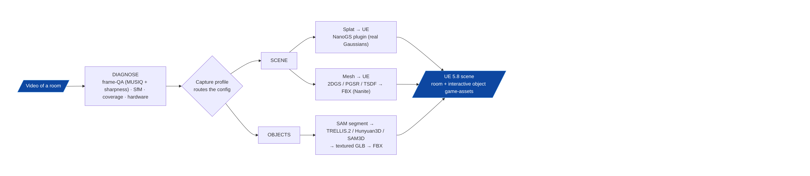
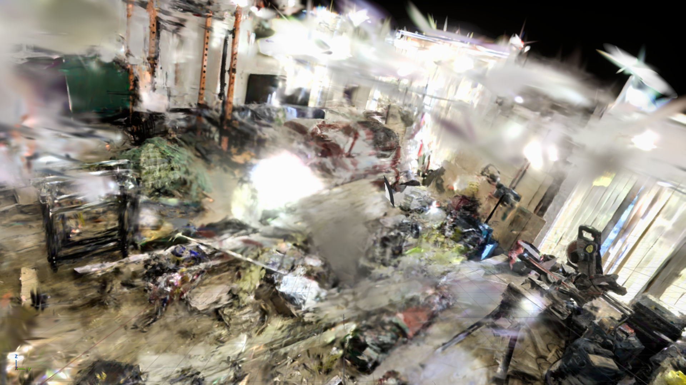
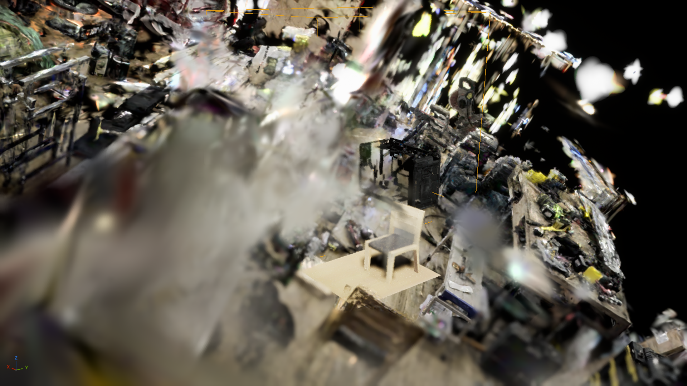

A capture-adaptive video → structured-3D-scene pipeline for Unreal Engine 5.8.
Point it at video of a room; get an editable, textured 3D scene — room + object game-assets — in UE 5.8.
Dr John O'Hare · University of Salford · DreamLab AI
VITRINEDreamLab AI / University of Salford · 2026
The problem
"A pretty splat" is not "an asset an artist can use."
Turning ordinary handheld video of a real space into a usable, editable 3D scene in a game engine is unsolved end-to-end. The last mile — from radiance field to game-ready, textured, separable meshes — is where it breaks.
Where it's needed
Cultural-heritage preservation · immersive / mixed reality · virtual production · digital twins of real spaces.
Imported as FBX game-assets with baked-texture materials, Nanite-ready.
Optional compressed .ksplat for the web.
USD is optional / archival — not the deliverable. The UE contract is FBX with a baked-texture material (see slide 14).
Composed scene — room + placed object assets
VITRINE03 / 20 · Deliverable

The big idea
Capture quality varies wildly — so one fixed pipeline fails.
Vitrine DIAGNOSES each capture — frame-QA (MUSIQ + directional sharpness), SfM success, coverage, hardware — then ROUTES to the recipe that fits: a SCENE branch (splat→UE or mesh→UE) and an always-on OBJECTS branch.
Full-resolution Laplacian — blur metrics on 4K frames span ≈105×; down-scaling to 960p collapses that to ≈1.6× and hides blur.
Directional sharpness (λ₂) — structure-tensor minor eigenvalue; the λ₂/λ₁ ≪ 1 signature tells motion blur from defocus/haze.
Sharpest-per-window FIFO sampler — raised bottom-quartile sharpness +20–38% (median only +7–13%): it removes the floor, the frames that poison COLMAP.
It cannot invent sharpness
On uniformly blurry footage the gate issues a recapture flag rather than passing a degraded subset off as adequate. Four unit tests validate the directional metric (no-blur, horizontal, vertical, mixed).
VITRINE06 / 20 · Stage
Stage 2 — camera geometry
Structure-from-Motion (COLMAP).
COLMAP SfM with modern features — ALIKED keypoints + LightGlue matching.
Robust to the wide-baseline handheld captures where classic SIFT struggles.
Produces camera poses + a sparse cloud that anchor everything downstream.
600/600
dreamlab frames registered
1.03 px
mean re-projection error
One coordinate frame. The poses are the shared frame for splats, meshes, and object placement — coherent whole-room coverage, not fragmented sub-models.
VITRINE07 / 20 · Stage
Stage 3 — the radiance representation
3D Gaussian Splatting — LichtFeld Studio.
Native C++23 / CUDA 3DGS training via vendored LichtFeld Studio v0.5.3.
Produces the scene radiance field; optional .ksplat export for web.
dreamlab: 2.48M Gaussians trained → cleaned to 1.55M in SuperSplat.
LichtFeld does the heavy GPU lifting — but it is a tool we call, not our code (next slide).

Real Gaussians rendered in UE 5.8 via the recompiled NanoGS plugin
VITRINE08 / 20 · Stage
Architecture principle
LichtFeld is a vendored tool. Vitrine is the product.
Vitrine — the product
pipeline · web UI · onboarding · UE 5.8 overlay · the router. This is our code.
MeshCleaner(smooth=0) — smoothing makes degenerate tris that segfault xatlas
→
Unwrap
xatlas UV atlas (decimate first — raw TSDF isn't manifold)
→
Bake
albedo from vertex colours — Blender Cycles GPU
→
Export
FBX with baked-texture material
This is the UE-delivery path that replaces native USD export — baking is what turns research geometry into an asset an engine accepts.
Why baking is mandatory: UE drops vertex colours on FBX, OBJ and GLB COLOR_0 import — captured colour only survives as a baked UV texture.
VITRINE12 / 20 · Stage

Stage 7 — the payoff, in-engine
Unreal Engine 5.8 assembly.
In-repo UE 5.8 (no Epic gate). Import room + object FBX game-assets with Nanite; optional NanoGS plugin embeds real Gaussians; drive it via Web Remote Control :30010 + experimental UE MCP. Result: an editable scene of room + interactive object assets.
VITRINE13 / 20 · Stage
The anti-pattern that shaped the design
Why not USD?
✗ USD ParticleField → UE
LichtFeld's native USD export emits a ParticleField prim UE's importer cannot import as a mesh; UE also drops displayColor.
✓ Mesh → bake → FBX → UE
Vitrine's own mesh → texture-bake → FBX path is the UE contract. USD stays optional / archival.
A representative "we tried the obvious thing and it failed" decision — captured in docs/ANTIPATTERNS.md (ADR-019) so it is never re-attempted.
VITRINE14 / 20 · Decision
The adaptive toolbox the router switches in
Capture-conditional enhancers.
ArtiFixer
Regenerates floaters / holes / under-observed regions. Runs ArtiFixer-14B on a single 48 GB RTX 6000 Ada (peak 45.5 GB; sm_89 via Ampere sm_86 compat).
Deblur
For motion-blurred captures — a different defect class from coverage gaps.
Densification
For sparse coverage — adds support where views are too thin.
Conditional, not always-on. ArtiFixer fixes under-observation, not blur. dreamlab is 0% under-observed (dense), so ArtiFixer was correctly not applied — its target is a sharp capture with viewpoint holes.
Standing rule: always run clean SOTA — a single unified ~216 GB model tree.
python -m pipeline.sota_registry check validates everything before any run.
VITRINE17 / 20 · Method
Current status — the dreamlab reference run
What's proven, plainly.
Splat ✓
Splat-hero room standing in UE 5.8 via recompiled NanoGS — real Gaussians, not a point cloud.
Scene ✓
Mesh → texture → FBX → UE recipe validated on the TSDF path; room + objects placed at real-world coords.
Objects
3 reconstructed via TRELLIS.2 (chair excellent, toolbox good, vacuum marginal); CoMe scene meshing being brought up.
composedtop-downrear
VITRINE18 / 20 · Status
The deck's most important honest finding
The bottleneck is capture, not algorithms.
MUSIQ ≈31 — usable (above the ≈19 abandon threshold) but well below the 50–75 range of good photographic stills.
0% under-observed — the defect is sharpness, not coverage.
2DGS ≈ TSDF — two different extractors give the same planarity (CoMe-TSDF 72% inlier, both fail a "fair room"). If extraction were the limit, SOTA surface recon would have helped. It didn't.
Finer voxel = sharper noise — 0.015→0.005 resolves the noise more precisely, it doesn't remove it.
The real lever is recapture
A four-node research swarm confirmed: no RGB-only method materially improves a uniformly blur-limited capture. The fix is 4K60 short-shutter with deliberate coverage — not bigger models or finer voxels. Routing quality to objects is the mitigation; room fidelity has a capture ceiling.